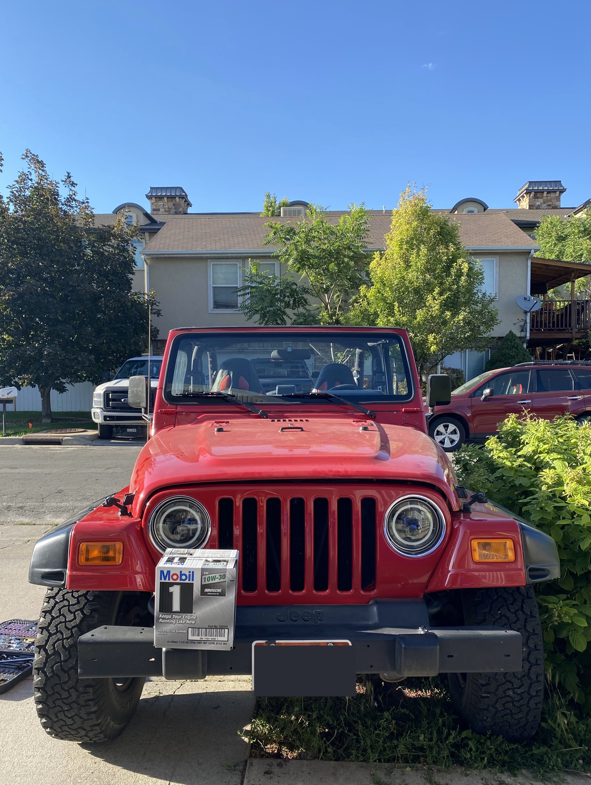
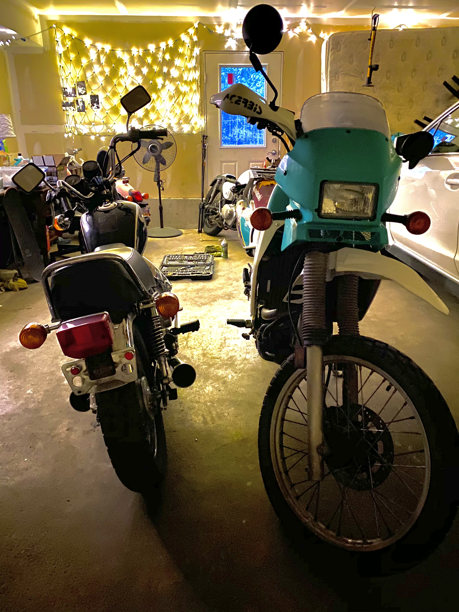

2002 Jeep Wrangler 2.5L

Mileage: 54000
Date Purchased: Oct. 3, 2018
I am the second owner of this 18 Yr old TJ. The first owner only put 44,000 miles on the engine, and kept it in the garage as a spare vehicle. (I'm still rocking the original soft-top from 2002!) Modifications: Bed-lined Full Door, Radio/speakers/subwoofer replacement, LED Headlights.
1982 Honda XL185 S

Mileage: 4300
Date Purchased: May 4, 2019
Found this in the Avenues for $400, barely running. My first motorcycle ever. I brought it back to life with a new throttle, carb clean, header pipe, 12v conversion, and lights! Super fun little dual sport to learn how to ride on. I sold it to some hick during the beginning of the Covid-19 Pandemic.
1972 Honda CL350 Scrambler

Mileage: 18000
Date Purchased: May 1, 2020
Finding myself Motorcycle-less, I knew that I needed another project to work on. Stumbled upon this on FB Marketplace for $600. I have always wanted a cafe racer/scrambler to ride around on. After owning this for a couple of months, I've decided that it's too big of a project for me to take on right now... One day!
2004 Honda Metropolitan

Mileage: 3000
Date Purchased: May 27, 2020
Found in Roosevelt, UT about 3 hours away. Purchased from a drug user that had spray-painted what once was red, to pink. She glued some figurines and made a couple of other odd Modifications. Replaced the electronic choke, cleaned carb, replaced tires, and I am still in the process of getting the pink to look right.
1994 Kawasaki KLR650

Mileage: 12000
Date Purchased: Aug 7, 2020
Found from a junk yard, don't totally know how long it sat there. Current Project bike. Project list includes, new key/ignition, fluids replacement, rear brake seized, rear shock is slumpy. I couldnt pass up the styling on this 90's thumper! I'm excited to see this come back to life!
1983 Honda CM250C